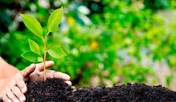

Por que cuidar el planeta?
1. Preservación de la biodiversidad: El planeta alberga una increíble diversidad de formas de vida, desde plantas y animales hasta microorganismos. Cada especie juega un papel crucial en el equilibrio de los ecosistemas, y la pérdida de biodiversidad puede tener consecuencias graves y a menudo impredecibles.
2. Protección de los recursos naturales: Los recursos naturales, como el agua dulce, el aire limpio, los suelos fértiles y los bosques, son vitales para la vida en la Tierra. Cuidar el planeta implica usar estos recursos de manera sostenible para garantizar su disponibilidad para las generaciones futuras.
3. Mitigación del cambio climático: Las actividades humanas, como la quema de combustibles fósiles y la deforestación, han desencadenado el cambio climático, que tiene efectos devastadores en el clima, los ecosistemas y la sociedad. Cuidar el planeta implica reducir las emisiones de gases de efecto invernadero y adoptar prácticas que ayuden a mitigar el cambio climático.
4. Garantizar un futuro sostenible: La salud del planeta está intrínsecamente ligada a la calidad de vida de las personas. Cuidar el planeta implica adoptar estilos de vida sostenibles, promover la equidad social y económica, y trabajar hacia un desarrollo que satisfaga las necesidades presentes sin comprometer las de las futuras generaciones.
5. Salud humana: Un ambiente saludable es fundamental para la salud y el bienestar de las personas. La contaminación del aire, el agua y el suelo puede causar una variedad de enfermedades, desde problemas respiratorios hasta enfermedades crónicas. Al cuidar el planeta, también estamos protegiendo nuestra propia salud y la de las generaciones futuras.
6. Seguridad alimentaria: La agricultura y la pesca sostenibles son fundamentales para garantizar la seguridad alimentaria global. El cambio climático, la degradación del suelo y la contaminación pueden afectar negativamente la producción de alimentos. Cuidar el planeta implica proteger los ecosistemas naturales y adoptar prácticas agrícolas que sean respetuosas con el medio ambiente.
7. Conservación de los ecosistemas acuáticos y terrestres: Los océanos, ríos, bosques y otros ecosistemas proporcionan hábitats vitales para una amplia variedad de especies. Cuidar el planeta implica proteger estos ecosistemas de la contaminación, la deforestación y la sobreexplotación, lo que a su vez ayuda a mantener el equilibrio de los ecosistemas y promueve la resiliencia frente a los cambios ambientales.
8. Respeto por otras formas de vida: Cada ser vivo en la Tierra tiene un valor intrínseco y merece ser respetado. Cuidar el planeta implica reconocer la interconexión de todas las formas de vida y actuar con empatía y consideración hacia los animales, las plantas y los ecosistemas en su conjunto.
En resumen, cuidar el planeta es crucial para proteger la biodiversidad, preservar los recursos naturales, mitigar el cambio climático y garantizar un futuro sostenible para todas las formas de vida en la Tierra.
